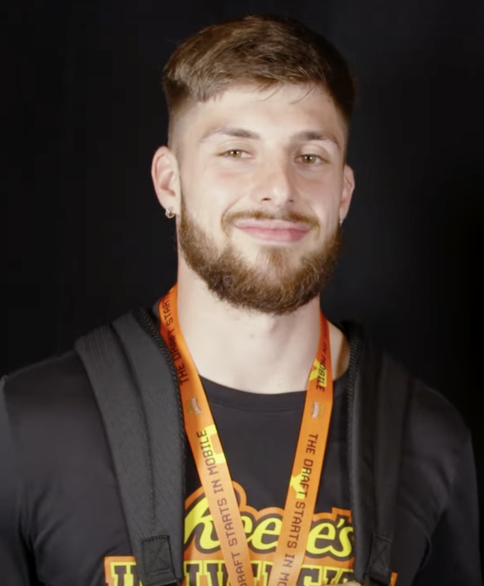

Ricky Pearsall Is Out for the Year, and This Kid Just Cannot Catch a Break
Season-ending IR, PCL surgery coming in the next couple of weeks, and a six-to-12-month road back. Whatever the football version of bad luck is, Ricky Pearsall has been living in it since the day he got here.

There's no spin to put on this one. Ricky Pearsall is going on season-ending injured reserve, he's having surgery on the PCL in his right knee in the next couple of weeks, and the timeline being floated is six to 12 months, with nine months looking like the realistic middle. That means all of 2026 is gone. The whole thing. Camp, the opener, the playoff run, the works.
And honestly, the first reaction around here wasn't strategy or roster math. It was just, man, this guy can't seem to get a break or stay healthy. Think about the run he has been on since San Francisco spent a first-round pick on him. He got shot in downtown San Francisco before he ever played a snap in the league. He fought his way back from that. Then he finally started stacking real production, looked like exactly the receiver the front office thought they were drafting, and got hurt again. Week 4 against Jacksonville last year is where this knee first went, and it cost him all or part of 10 games. He never got to be healthy long enough for anybody to see the finished product.
What makes this one sting extra is how reasonable the plan was. The PCL was a nagging thing, not a shredded ligament, and PCLs do sometimes settle down and heal on their own with rest. So Pearsall and the team took the patient road through the offseason and hoped the knee would come around. It didn't. A few days of actual training camp practice and the swelling showed up and told the truth. Better to know now than in Week 6, but that doesn't make it any easier to swallow when the kid did everything asked of him and the body still said no.
The good news, and there's some, is that the surgery isn't a career issue. It's a lost season, not a lost player. He turns 26 during this rehab, and a PCL repair with a nine-month runway puts him back in the building well before next camp with a knee that's finally right for the first time since the middle of last season. This is the fix he probably needed six months ago.
The other piece of good news is that this roster is built to absorb it, which is a sentence Niner fans haven't gotten to say very often when a starting receiver goes down. Mike Evans and Christian Kirk are here. Deebo Samuel just came home on that one-year, $7 million deal, and his signing officially takes the roster spot Pearsall's IR move opened up. De'Zhaun Stribling has been the story of camp and just had the door to a starting job kicked wide open for him. George Kittle is still George Kittle. Brock Purdy is throwing the best ball of his life. Losing a first-round receiver for a year would have gutted the 2023 or 2024 version of this offense. This one shrugs and reloads.
But depth charts aren't the point of this column. The point is that Ricky Pearsall deserves better than the hand he keeps getting dealt. He has been shot, he has been rehabbed, he has been benched by his own knee, and he has never once complained about any of it in public. He shows up, he works, he says the right things, and then something else falls on him. At some point the universe owes this guy a boring, healthy, 17-game season where the only thing anybody talks about is his route running.
Get the knee fixed, Ricky. Take the nine months. Nobody in Niner Nation is writing you off over this, and everybody around here would love nothing more than to spend next August talking about what you can do instead of what you're coming back from.
More coverage: 49ers section · Bay Area NFL · Columns · Bay Area Sports Blog home